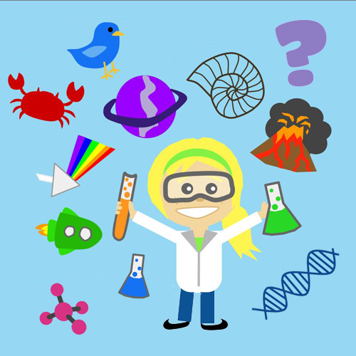

STEM აქტივობების და ნაკრებების შექმნა
ჩვენ შეგვიძლია თქვენს მოთხოვნებზე მორგებული STEM აქტივობების და ნაკრებების შექმნა. მსგავსი რესურსი გამოგადგებათ როგორც ფორმალური, ასევე არაფორმალური სწავლების პროცესებში, სხვადასხვა კონკურსზე, პიკნიკზე და გამოფენაზე გასატანად. შესაძლებელია უნიკალური STEM აქტივობების და ნაკრებების შექმნა, რომლებზეც გექნებათ საავტორო უფლება. STEM აქტივობების და ნაკრებების შექმნა მასწავლებლებისთვის გულისხმობს პრაქტიკულ, ინტერაქტიულ და სასწავლო პროცესში ადვილად ინტეგრირებად მასალებს. ეს შეიძლება მოიცავდეს ლაბორატორიულ ექსპერიმენტებს, ინჟინრულ გამოწვევებს, კოდირების ამოცანებს და ხელნაკეთ STEM პროექტებს.

STEM ტრენინგები მასწავლებლებისთვის
მონაწილეები გაეცნობიან სწავლების STEM მიდგომის არსს, იმუშავებენ საგანმანათლებლო STEM ნაკრებებზე და სასწავლო სცენარებზე პრაქტიკულად და გაეცნობიან STEM სასწავლო სცენარების შექმნის მეთოდოლოგიას. ტრენინგები მასწავლებლებისთვის მიზნად ისახავს ინოვაციური და პრაქტიკული სწავლების მეთოდების განვითარებას. ასეთ ტრენინგებში, როგორც წესი, მასწავლებლები ეუფლებიან:
🔹 პრაქტიკულ და ინტერაქტიულ მიდგომებს – როგორ ჩართონ ექსპერიმენტები, პროექტებზე დაფუძნებული სწავლება და რეალური ცხოვრების სცენარები გაკვეთილებში. br 🔹 ტექნოლოგიების გამოყენებას – როგორ გამოიყენონ კოდინგი, რობოტიკა, 3D ბეჭდვა და სხვა ტექნოლოგიები სასწავლო პროცესში.
🔹 მულტიდისციპლინური სწავლების ინტეგრაციას – როგორ დააკავშირონ სხვადასხვა საგნები ისე, რომ მოსწავლეებმა უფრო სრულყოფილად გაიგონ მასალა.
📌 ტრენინგის ფორმატები
✅ ოფლაინ ვორქშოპები – პრაქტიკული გაკვეთილები, ლაბორატორიული მუშაობა.
✅ ონლაინ კურსები და ვებინარები – ინტერაქტიული პლატფორმები და მასტერ-კლასები.
✅ გუნდური პროექტები – რეალური პრობლემების გადაჭრა და STEM კონკურსებში მონაწილეობა.
🔹 მოსწავლეების ჩართულობის ზრდას – STEM საგნების მიმართ ინტერესი და მოტივაცია როგორ გაზარდონ.
საგნობრივი ლაბორატორიების შექმნა
ჩვენ შეგვიძლია აღვჭურვოთ თქვენი სასწავლო დაწესებულება თქვენს მოთხოვნებზე მორგებული საგნობრივი ლაბორატორიებით. ჩვენ ვადგენთ ტექნიკურ მახასიათებლებს თითოეული ლაბორატორიისთვის, რაც უზრუნველყოფს რესურსების ეფექტურ გამოყენებას ბიუჯეტის შეზღუდვების გათვალისწინებით. ჩვენ ვითვალისწინებთ დამკვეთი ორგანიზაციის სპეციფიკურ საჭიროებებს და თითოეულ ლაბორატორიას ვარგებთ მათ მოთხოვნებს. ჩვენი სერვისი მოიცავს საგნობრივი ლაბორატორიული აღჭურვილობის სრულ დაგეგმვას და მიწოდებას. ჩვენ ვგეგმავთ ლაბორატორიის დიზაინს, ვარჩევთ აღჭურვილობას და ვატარებთ ტრენინგებს ლაბორატორიის გამოყენებაში.